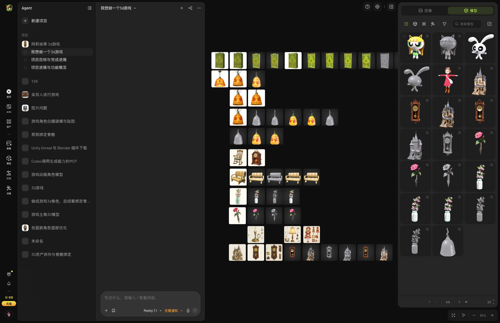
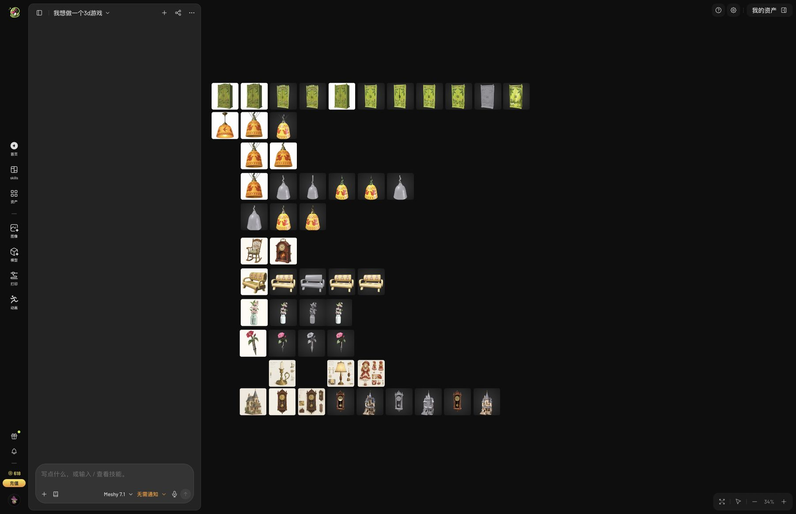
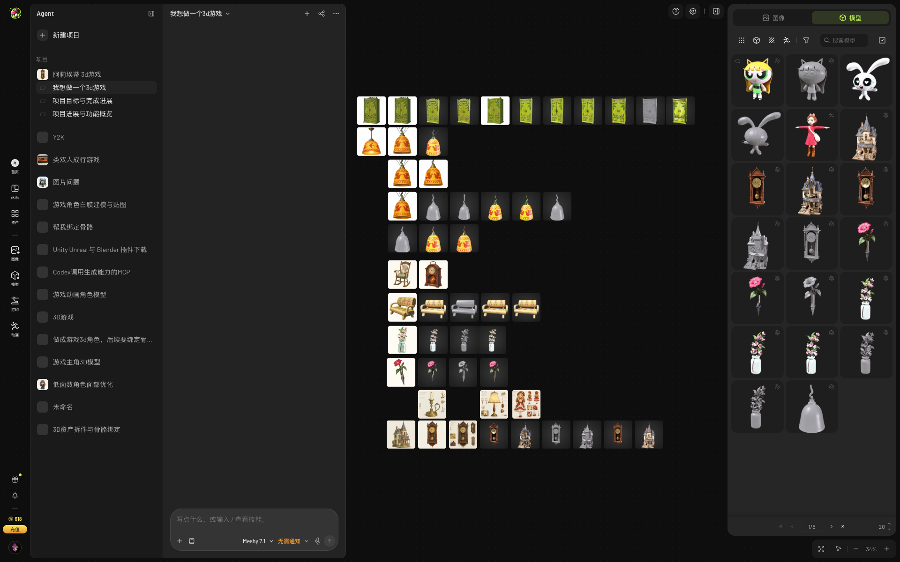
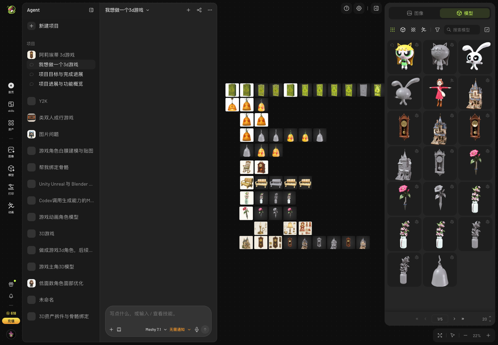
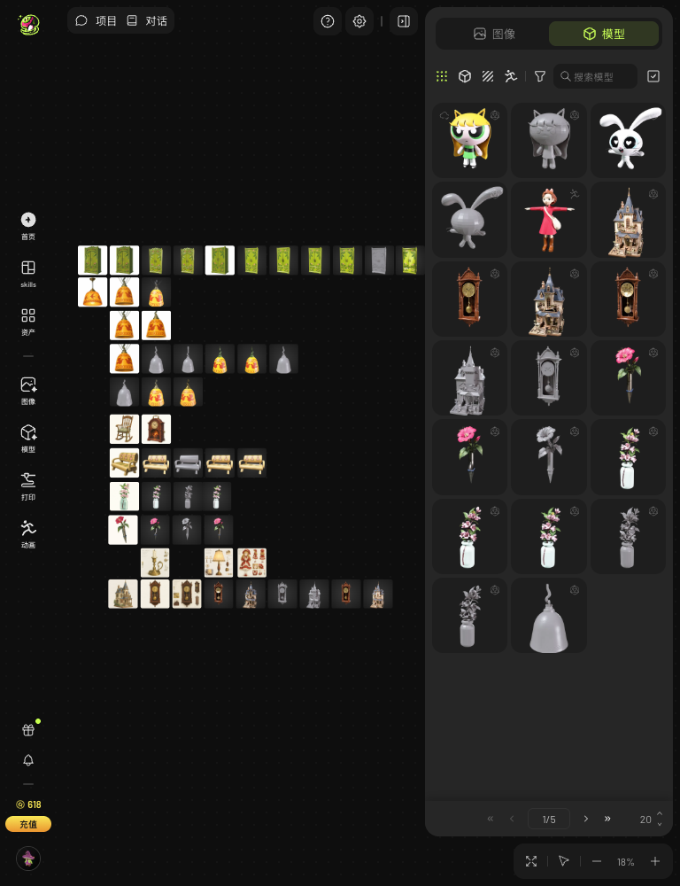
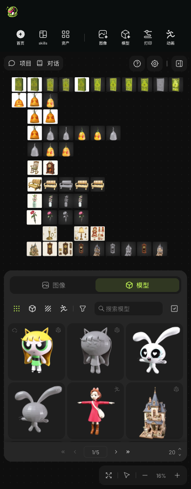
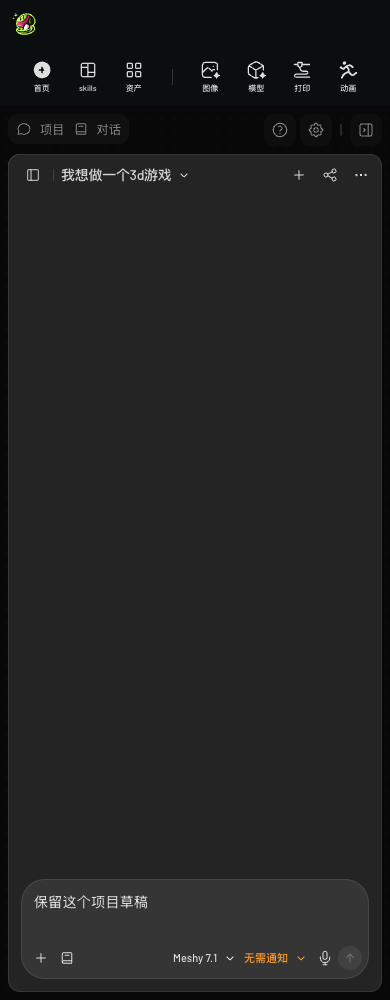

Redesign 1 · 点我！借东西小人游戏项目
左侧沿用方案一导航。按原站恢复项目框架、52 张画布卡片和右侧 20 张模型资产，对话内容留空。
侧栏展开与收起录屏
修正展开瞬间的标题左跳；含往返、中途反向、连续点击与右侧资产栏恢复。
原站参考尺寸 · 1802 × 1164

侧栏与资产栏收起状态
对话左上角可恢复项目栏；右上角「我的资产」可恢复模型列表。画布支持 Cmd + 滚轮缩放。

1920px

1440px

平板和手机


